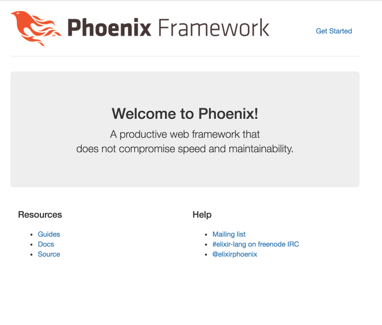

Phoenix is awesome
August 7th, 2016
This week was a fun one. I took all the code I’ve been building the past few weeks and used it via a Phoenix project. Since I’m using Rails at my current workplace, Phoenix is like home to me. I love how easy it is to get started and focus on the application.
This post explains how I moved my code over to the phoenix project. It also covers a few issues that I stumbled over.
Starting a new Phoenix project
To get started with Phoenix, I followed the Up and Running section of the guide. Since I had already a Git repo named Elt, I entered the following commands in my terminal:
cd ~/src/elt && mix phoenix.new .Just as the expectations were, the whole project is created with these two commands. I’m always eager to see how it looks like, so I skipped through the rest of the documentation and tried to start the server.
mix phoenix.server
[error] Postgrex.Protocol (#PID<0.203.0>) failed to connect: ** (Postgrex.Error) tcp connect: connection refused - :econnrefused
[error] Postgrex.Protocol (#PID<0.203.0>) failed to connect: ** (Postgrex.Error) tcp connect: connection refused - :econnrefusedRight, the server is configured by default to attempt a connection to a local postgres server on port 5432. Time to setup the database!
Database setup
If you haven’t heard about Docker, I urge you to start reading about it. Docker recently launched Docker for Mac which works beautifully on laptop. Going to keep it simple for now as I want to focus on my Phoenix application, not on the database.
docker run --name=phoenix-db -p 5432:5432 -d postgresThis command will start a postgres server. The -d argument makes it so it’s a daemon process. This way I won’t have to keep a tab open all the time. The -p 5432:5432 argument will forward any connection request on my laptop on port 5432 to the container’s 5432 port. Essentially it makes the postgres server visible on my laptop. We can try again running the server now that postgres is running.
mix phoenix.server
[error] Postgrex.Protocol (#PID<0.195.0>) failed to connect: ** (Postgrex.Error) FATAL (invalid_catalog_name): database "elt_dev" does not exist
[error] Postgrex.Protocol (#PID<0.199.0>) failed to connect: ** (Postgrex.Error) FATAL (invalid_catalog_name): database "elt_dev" does not existHmm, different error this time. Seems like the connection was established successfully, but there’s a database missing. Nothing to worry about. If I wasn’t so impatient, I would have read the doc and notice that I need to run the following command.
mix ecto.create
The database for Elt.Repo has been createdWith this running, I can run again my server command and access my first Phoenix server!

Migrations
Now that I have my first server running, I want to be able to launch load tests from it. When the load test is over, I’ll store the results in Postgres so that we can see the stats. Here’s the basic metrics I want to store in Postgres:
- Number of HTTP Requests
- Number of successful requests
- Average request time
This is the perfect time for me to use a database migration, just like in Rails. There’s a really nice Phoenix task phoenix.gen.html which generates the Ecto model. Not only does it tackle the model, it also creates all the controller, views and templates associated with this model.
mix phoenix.gen.html LoadTest load_tests amount_of_requests:integer amount_of_success:integer average_request_time:floatThis command generates the database migration as well as the html views needed to access it. The first argument LoadTest is the module name. The second argument is used for resources and schema. The remaining arguments define the columns used in the database. Note the the average_request_time is a float because we want to keep precision for the average request time. You can read more about this task in the doc right here
Running the migration afterward looks like this:
mix ecto.migrateStoring the state
So far, I have the following aspects which are ready:
- Database setup
- Ecto model migrated
- Default Phoenix views generated
In order to launch a load test, I copied all my code from previous weeks into the lib/elt folder. I’m not sure if it should be placed here, but it will do the job for now. In the post last week, we refactored the code to detect the end of a test. This is great because we will know when we can record the test in the database. One problem is still there however. How can we retrieve the results? Of course they are currently logged into a file, but parsing the file is a terrible way to retrieve those results. What we need is a list containing all the results so that we can access them after the test.
I came up with a small module to keep the state of the result using an Elixir Agent:
This is a simple agent which will start with an empty list. The put function will insert the value at the beginning of the list. get_all returns the current list while clean resets the list to empty.
Having this, we can adapt the HTTPSender to record all the entries in this list. We will be able to retrieve all the results later.
The important part here is line 14. We’re inserting in the list a tuple with the following format: {boolean, float}. This represents if the request was successful and it’s execution time in milliseconds. With this, we will be able to calculate the load test metrics and record it in Postgres.
Launching the load test
Allright, time to get our hands dirty in the Phoenix code. Two things to do. First let’s define all the functions needed to calculate the load test stats.
I added three methods to my module. Each of them are taking as an argument a list of tuple. Counting the requests is trivial, taking the length of the list does the trick.
Counting successes for a test isn’t hard either. Filter only the elemnts of the tuple which have true as boolean value, and take the length of the list.
Finally, counting the average request time is a two step function. First sum all the values for the float element of the tuple. Then divide this sum with the number of elements in the list.
The last step for this week was to connect all these pieces with the controller.
On the create action, we want to execute the following steps:
- Trigger a load test
- Retrieve the results
- Calculate the different metrics
- Store the metrics in Postgres.
Runner.main launches the load test. Note that for now, the load test is pre-defined in a JSON file. In the future, I’m planning to offer a JSON editor or file uploader to edit the load test. Also, I added in the Runner.main function the List.Bucket.start_link statement. It’s debatable if this should be in the Runner module or directly in the controller. This is something I will have to think about.
Once the test is over, we retrieve the results with List.Bucket.get_all. Cleaning the bucket so that the next test starts with a fresh state as well. Calculate all the metrics via the functions defined earlier and finally store it in Postgres via Ecto.
Results
It’s a wrap for this week. Here’s what the final product looks like. Still a lot of work to be done, but it’s doing the job for now :)